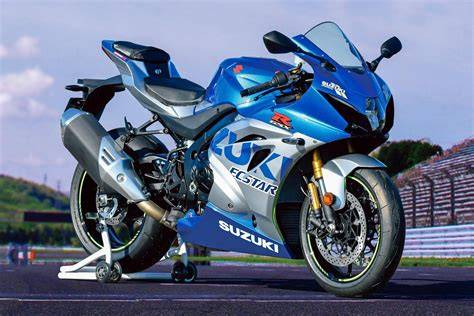

Suzuki GSX-R1000

A Suzuki GSX-R1000 é uma motocicleta esportiva famosa pelo seu desempenho, tradição nas pistas e design agressivo. É uma moto que combina tecnologia, potência e muita esportividade.
Características
Motor: quatro cilindros em linha.
Cilindrada: aproximadamente 1.000 cc.
Categoria: Superbike.